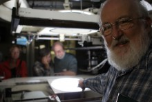

Please note: the AAS Obituaries are temporarily being hosted on this website while their full content is being ingested into the PubPub publishing platform newly adopted by the Bulletin of the American Astronomical Society. When the migration is complete, your existing links will take you to the final, migrated content. Contact peter.williams@aas.org with any questions.
Craig B. Waff (1946-2012)
Craig Waff, a leading historian of astronomy, died five days after a heart attack he suffered while doing historical research in the Huntington Library in San Marino, California. He suffered the heart attack just two days after successfully observing the June 5, 2012 transit of Venus from the 150-foot solar tower at Mt. Wilson Observatory.
Waff was born in New York City, and grew up in Flushing, Queens, and Plainview, Long Island as well as North Miami, Florida, where he completed high school. He was painfully shy but possessed of exceptional mathematical ability from an early age. He majored in mathematics at the University of Florida, graduating in 1969, and worked summers as a co-op student at the NASA Langley Research Center in Virginia. He attended graduate school at Johns Hopkins University, and was awarded his PhD degree in 1976. Working under the eminent historian of astronomy Harry Woolf, who had authored the long-definitive book on the transits of Venus of 1761 and 1769, and supported in his researches in France and Denmark by a Woodrow Wilson Fellowship, Waff completed a brilliant dissertation on the lunar theory of Clairaut, d’Alembert, and Euler.
After completing his Ph.D., Waff taught mathematics at the University of Missouri, Kansas City, but because of his shyness decided that a career as a university professor standing in front of a classroom was not his forte. Instead he worked for many years as an editor for New York City publishers of encyclopedias and other reference works. One of his most significant pursuits was in the role of contract historian for NASA JPL in Pasadena (1985-1993), where he researched the history of NASA’s Deep Space Network (the tracking system for interplanetary spacecraft) and the Galileo mission to Jupiter. From 2004 until the time of his death, he was Senior Historian at the Air Force Research Laboratory at Wright-Patterson Air Force Base in Dayton, Ohio, with the exception of a brief stint at Andrews Air force Base where he was historian for the 89th Airlift Wing.
Though Waff’s professional work was often behind the scenes, history was also his personal passion, and he devoted much of his leisure time and vacations to research trips around the United States and Europe. He was one of the few individuals to attend all of the Notre Dame biennial workshops in history of astronomy from the first one in 1993 up to the last in 2011. He published seminal papers on the history of the US Nautical Almanac Office and the early pre-factory career of telescope-maker Alvan Clark. In the latter connection, he was an avid member of the Antique Telescope Society.
I first met Craig at the Notre Dame workshop in 1997, but got to know him really well later through a mutual interest in the history of the discovery of Neptune. The latter topic was a natural for Craig, since his dissertation had concerned lunar perturbation theory and he was an excellent mathematician. We traveled together in England and spent several days at Cambridge, examining the recently recovered Greenwich Neptune file in the RGO archives at Cambridge University library that G.B. Airy had assembled, after the discovery of Neptune produced a furor over priority. At the time there was a great deal of paranoid nonsense being written about conspiracies among the British astronomers to capture credit for J.C. Adams away from the French mathematical astronomer U.J.J. Le Verrier, but Craig would have none of it, and saw clearly that the Neptune file actually supported the broad outline of events that Airy had entered into the record in November 1846. Craig and I stayed at the Cambridge University Observatory on Maddingley Road in the keeper’s cottage near the old observatory building. I have many fond memories of lovely spring evenings we spent together walking along Adams’ walk, with the birds singing and flowers blooming, and of looking through the old Northumberland refractor together, of walking between St. John’s College and the observatory and of sleuthing out the location of Adams’s grave in All-Souls’ Cemetery. Craig was thrilled to find the latter and posed for a picture beneath the Celtic cross that marked the site. Afterwards, we went to Selsey together to pay our respects to Sir Patrick Moore, then parted ways—though we corresponded regularly, I never would see him again; I went to South Africa for the transit of Venus, while Craig pushed on to Cornwall, where with Adams historian Brian Sheen he did one of those things that make an historian’s pulse race—he turned up an important but hitherto unrecognized draft of a letter from Adams to Airy from November 1845 in the Truro Records office. Craig dreamed of collaborating on a new history of the discovery of Neptune, but his meticulous standards and eagerness to pursue every document possible—including newspaper clippings of the period—as well as his responsibilities at the Air Force Research Laboratory and early death prevented its realization. He did leave a large number of manuscript notes and papers to aid future Neptune researchers.
At the time of his death, Craig was also completing the research for a study of the popular lectures of Ormsby MacKnight Mitchel, founding director of the Cincinnati Observatory and Civil War general, and had just written and edited several contributions to The Greatest Games of 19th century baseball . As an avid Yankees fan from his early days growing up in New York, early pre-Civil War baseball was the subject which, apart from the history of astronomy, was Craig’s most passionate area of research.
Waff’s parents were Charles and Mary Waff. He was married to Trudy E. Bell, another science writer and editor, from 1993 to 1997, and though they divorced and lived apart thereafter, they remained very close, traveled together, and shared the raising of Trudy’s daughter Roxana. They were together in Pasadena where both presented talks on the transit of Venus and observed the transit at Mt. Wilson Observatory on June 5. Just two days later, after he had spoken (by phone) with Trudy, Craig collapsed in the Huntington Library while completing his research on Mitchel. Suffering a massive coronary, he never regained consciousness. He is survived by Trudy E. Bell and Roxana Bell of Lakewood, OH, his brother LCDR William B. Waff, USCG (ret.) and sister-in-law Ellen Coutts Waff of Middlefield CT, and three nieces. An obituary written by Trudy Bell appeared in the Society for the History of Astronomy electronic news, volume 4, no. 3, July 2012, 18-21. He was a quiet, generous, and gentle man, and he will be greatly missed.
Obituary written by: William Sheehan
BAAS Citation: BAAS, 2012, 44, 021